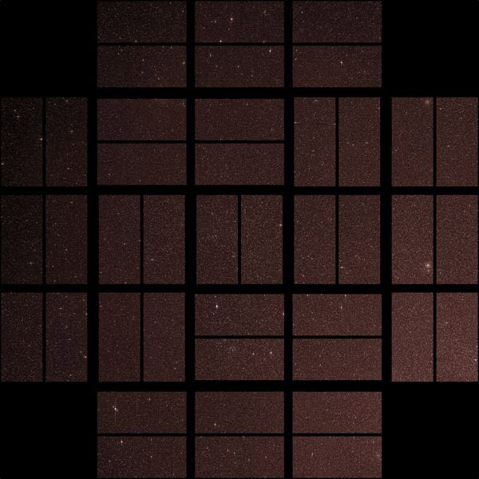

There are two archives for official Kepler and K2 data products - the Exoplanet Archive which is hosted at the NASA Exoplanet Science Institute (NExScI) and the Mikulski Archive for Space Telescopes (MAST) which is hosted at the Space Telescope Science Institute (STScI). The Exoplanet Archive primarily hosts data related to the Kepler and K2 mission planet searches while the MAST is responsible for hosting time series data and spacecraft calibration products for Kepler and K2.
In the following sections we list the main products from Kepler and K2, and we describe a few of the products in some detail. For tools and tips on inspecting and analyzing Kepler or K2 data, users should check out this page.
Documentation
We encourage users of Kepler and/or K2 data to read through the documentation associated with the Kepler and K2 data products. There is documentation specific to the Kepler data products and to the K2 data products. Users of K2 data should note that much of the Kepler documentation is also relevant to K2. Additional documentation can be found here or can be downloaded directly by following the links below.
- Kepler Archive Manual
- Kepler Instrument Handbook and Supplement
- Kepler Input Catalog (KIC)
- Kepler Data Characteristics Handbook
- Kepler Data Processing Handbook
- Kepler Data Release Notes
- K2 Ecliptic Plane Input Catalog (EPIC)
- K2 Data Release Notes
- K2 Handbook
Kepler product overview
The Kepler mission page at MAST contains the latest news and updates on Kepler products. The following Kepler data products and catalogs are available through MAST and can be downloaded here:
Data products at MAST
- Long and short cadence target pixel files
- Long and short cadence light curves
- Data validation time series files
- Full frame images (calibrated and uncertainty files)
- Cotrending basis vectors files
- Pixel response function files
- Artifact removal pixel files
- Background pixel files
- Long and short cadence collateral files
- Reverse clock files
- Ancillary engineering files
- Latest SPICE kernels (bsp and tsc binary files)
Catalogs at MAST
- Kepler Input Catalog (KIC)
- KIC joined with characteristics table
- Revised stellar parameters of Kepler targets (Q1-Q16)
- Revised stellar parameters of Kepler targets (Q1-Q17)
- Kepler Objects of Interest (KOI)
- Kepler/GALEX cross match catalog
- False positive working group tables
- Observed KIC targets by quarter
The Kepler mission page at NExScI contains the following products and also details the instructions for requesting a Kepler number for new planets discovered in the Kepler data:
Data products at NExScI
- KOI activity tables
- Threshold-crossing events and data validation tables
- Stellar information for observed Kepler targets
- Ccompleteness and reliability products
Kepler data release notes
The prime Kepler mission operated from 2009 May 2 until 2013 May 8, when a second reaction wheel failed on the spacecraft. During its four years of operation, the spacecraft completed a 90 degree roll every 3 months to optimize solar panel efficiency. Kepler operations are therefore divided into four quarters each year, separated by the quarterly rolls of the spacecraft. The table below lists each operational quarter, the corresponding Guest Observer (GO) program cycle, the beginning and end dates for data collection, and the date the data was ingested at the MAST archive.
Kepler long cadence (30-min) images and light curves are stored in files that span a quarter. Short cadence (1-min) images and light curves are stored in files that span a month.
All Kepler data release notes can be found at MAST.
| Quarter | GO cycle | Start | Stop | Archive date |
|---|---|---|---|---|
| 0 | N/A | 2009 May 02 | 2009 May 11 | 2009 Oct 21 |
| 1 | N/A | 2009 May 13 | 2009 Jun 15 | 2009 Oct 23 |
| 2 | 1 | 2009 Jun 20 | 2009 Sep 16 | 2010 Jan 15 |
| 3 | 1 | 2009 Sep 18 | 2009 Dec 16 | 2010 Apr 15 |
| 4 | 1 | 2009 Dec 19 | 2010 Mar 19 | 2010 Aug 04 |
| 5 | 1 | 2010 Mar 20 | 2010 Jun 23 | 2010 Oct 23 |
| 6 | 2 | 2010 Jun 24 | 2010 Sep 22 | 2011 Jan 23 |
| 7 | 2 | 2010 Sep 23 | 2010 Dec 22 | 2011 Apr 23 |
| 8 | 2 | 2010 Dec 22 | 2011 Mar 24 | 2011 Jul 24 |
| 9 | 2 | 2011 Mar 19 | 2011 Jun 27 | 2011 Nov 18 |
| 10 | 3 | 2011 Jun 28 | 2011 Sep 27 | 2012 Jan 27 |
| 11 | 3 | 2011 Sep 29 | 2012 Jan 04 | 2012 May 04 |
| 12 | 3 | 2012 Jan 05 | 2012 Mar 28 | 2012 Jul 28 |
| 13 | 3 | 2012 Mar 29 | 2012 Jun 27 | 2012 Oct 23 |
| 14 | 4 | 2012 Jun 28 | 2012 Oct 03 | 2013 Feb 03 |
| 15 | 4 | 2012 Oct 05 | 2013 Jan 11 | 2013 May 06 |
| 16 | 4 | 2013 Jan 12 | 2013 Apr 08 | 2013 Aug 02 |
| 17 | 4 | 2013 Apr 09 | 2013 May 08 | 2013 Dec 09 |
K2 product overview
The K2 mission page at MAST contains the latest news and updates on K2 products. The following K2 data products and catalogs are available through MAST and can be downloaded here:
Data products at MAST
- Long and short cadence target pixel files
- Long cadence light curves (and some user-provided light curves)
- Full frame images (calibrated and uncertainty files)
- Cotrending basis vectors files
- Artifact removal pixel files
- Background pixel files
- Long and short cadence collateral files
- Ancillary engineering files
- Latest SPICE kernels (bsp and tsc binary files)
- Two-wheel concept engineering test data (some HLSP light curves exist)
Catalogs at MAST
- Ecliptic Plane Input Catalog (EPIC)
- Thruster firings for Campaign 1 and Campaign 2
- Published K2 exoplanets
The K2 mission page at NExScI contains an interactive table of K2 targets and also details the instructions for requesting a K2 number for new planets discovered in the K2 data.
K2 data release notes
The table below lists each operational K2 Campaign, the corresponding Guest Observer (GO) program cycle, the beginning and end dates for data collection, and the date the data was ingested at the MAST archive. The first four Campaigns had GO programs that were not conducted through NASA Roses and so do not have an official cycle associated with them.
Note that K2 long cadence (30-min) images are available for each Campaign. Light curves produced by the Project Office are available for most Campaigns, excluding 0, 2, and 9. Short cadence (1-min) images are also available for each Campaign, but no light curves are provided.
The relevant data release and pipeline notes for each Campaign are also linked in the table below. The pipeline release notes for K2 are available here, which detail deviations from the pipeline used for Kepler.
| Campaign | GO cycle | Start | Stop | Archive date | Release note | Pipeline note |
|---|---|---|---|---|---|---|
| C0 | N/A | 2014 Mar 08 | 2014 May 27 | 2014 Sep 08 | DRN | PRN |
| C1 | N/A | 2014 May 30 | 2014 Aug 21 | 2014 Dec 23 | DRN | PRN |
| C2 | N/A | 2014 Aug 23 | 2014 Nov 13 | 2015 Mar 16 | DRN | PRN |
| C3 | N/A | 2014 Nov 14 | 2015 Feb 03 | 2015 Jul 17 | DRN | PRN |
| C4 | 1 | 2015 Feb 07 | 2015 Apr 23 | 2015 Sep 04 | DRN | PRN |
| C5 | 1 | 2015 Apr 27 | 2015 Jul 10 | 2015 Oct 29 | DRN | PRN |
| C6 | 2 | 2015 Jul 14 | 2015 Sep 30 | 2016 Feb 08 | DRN | PRN |
| C7 | 2 | 2015 Oct 04 | 2015 Dec 26 | 2016 Apr 22 | DRN | PRN |
| C8 | 3 | 2016 Jan 03 | 2016 Mar 23 | 2016 Jul 04 | DRN | PRN |
| C9a | 3 | 2016 Apr 22 | 2016 May 18 | 2016 Oct 05 | DRN | PRN |
| C9b | 3 | 2016 May 22 | 2016 Jul 02 | 2016 Oct 05 | DRN | PRN |
| C10 | 3 | 2016 Jul 06 | 2016 Sep 20 | 2016 Dec 20 | DRN | PRN |
| C11 | 4 | 2016 Sep 24 | 2016 Dec 8 | 2017 Jun 30 | DRN | PRN |
| C12 | 4 | 2016 Dec 15 | 2017 Mar 4 | 2017 Jul 31 | DRN | PRN |
| C13 | 4 | 2017 Mar 8 | 2017 May 27 | 2017 Aug 28 | DRN | PRN |
Main data products
A few of the data products from Kepler and K2 are described below. For a comprehensive list of available products, see the above lists for Kepler and K2.
Full frame images (FFIs)
The Kepler detector is a photometer with an array of 42 CCDs or 21 modules. The Kepler field of view spans 115.6 square degrees over 95 million detector pixels, with 3.98 x 3.98 arcsec pixels. Science data downloads for Kepler occurred approximately once per month. Immediately before each data download, a 29.4 min image of the entire field of view was collected and transmitted. These are the Kepler FFIs, which can be downloaded from a dedicated data retrieval page at MAST.
For K2, typically only two FFIs are collected per Campaign. These can also be downloaded through MAST.
FFI data format is defined in section 2.3.3 of the Kepler Archive Manual. Note that as of August 2016, the Kepler detector has three dead modules (3, 4 and 7).

Target pixel files (TPFs)
The Kepler camera takes one exposure every 6.5s. Exposures are summed onboard and stored at either 1765.5 s (29.4 min) cadence (a.k.a. 30 min or long cadence) or 58.89 s cadence (a.k.a. 1 min or short cadence). At these data collection cadences, the Solid State Recorder onboard the spacecraft can store only 5.4 million of the 95 million pixels available. The pixels collected are chosen strategically to provide postage stamp images centered on the positions of targets of interest. The size of a postage stamp increases with target brightness and the average yield was 166,000 targets per month for Kepler. For K2 the average yield per Campaign is between 10,000 and 20,000 long cadence targets and 50 to 100 short cadence targets.
A critical concept for understanding artifact issues in Kepler light curves is that in order to maximize the target yield, postage stamp sizes and shapes are chosen to maximize the signal-to-noise on the 3-12 hour timescales of exoplanet transits. Postage stamp pixels are chosen by a calculation that combines the photometry and astrometry within the Kepler Input Catalog and an analytical model for the detector and optics. Any variation in the position of the target within the postage stamp or the focus of the telescope will result in a redistribution of flux within the postage stamp pixels. Similar steps are performed for K2 targets.
The target pixel files are the rawest form of target-specific data available from the Kepler and K2 archives at MAST. The TPF data format is defined in section 2.3.2 of the Kepler Archive Manual.

Typical images stored within a TPF. The left-hand image is stored in a time-tagged data table and contains calibrated, background-subtracted and cosmic ray removed pixel fluxes for one specific timestamp. The right-hand image contains a bitmap that describes the employment of each pixel in the Kepler/K2 pipeline. Black pixels were not collected by the spacecraft, yellow are collected but do not contribute to the photometry stored in the associated light curve file. White pixels are included in the photometric aperture that maximizes target signal-to-noise over nominal observations.
Light curve files
The light curves are derived from the TPFs. There is a one-to-one correspondence between the files and timestamps and quality flags within the two products are identical. The primary data within the light curve file is Simple Aperture Photometry - a summation of the calibrated pixels in the TPF.
The nominal spacecraft pointing for the Kepler mission was typically 20 milli-arcsec over 6.5 hours. Noise (artifacts) manifest from thermally-driven focus changes, pointing derivatives and differential velocity aberration. Systematic artifacts within the light curves are associated with these events and are the result of both time-dependent light losses falling out of the pixel apertures and time-dependent contamination of neighboring sources moving around within the pixel apertures. These effects are greater for K2 as the pointing is not as stable as for Kepler, due to low-frequency motion due to solar pressure and subsequent thruster firings. These cause targets to drift across detector pixels and are the dominant factor in photometric precision from K2 after photon statistics.
Within the pipeline, artifacts are mitigated for using a derivative of principle component analysis. The product of this analysis is provided within the light curve. It is the prerogative of archive users to determine whether the pipeline mitigation is suitable for their scientific goals or whether manual mitigation will be required.
Light curve files also contain centroid measurements derived from the TPFs. Since many artifacts are the result of target motion within its pixel aperture, time-resolved correlations between target flux and motion provide useful diagnostics of systematic artifacts within the time series.
The light curve file format is defined in section 2.3.1 of the Kepler Archive Manual. Light curves are available for all quarters of Kepler data, but are only available (from the Project Office) for Campaign 3 and later for K2.
Collateral data
Collateral data is collected onboard for the purpose of calibrating science data. Collateral pixels estimate the bias level, dark current and charge smear that results from shutter-less camera operation. Pixels are collected around sparse fields in order to provide background measures. Format and content of the collateral files is provided in section 2.3.7 of the Kepler Archive Manual. These files are available for both Kepler and K2.
Auxiliary data products
Auxiliary data is not collected directly by the spacecraft, but is derived from spacecraft data. Some of the currently available auxiliary data is described below.
Cotrending basis vectors (CBVs)
CBVs are provided for each operational quarter of the mission. These are derived by the Kepler pipeline from Principle Component Analysis and used to mitigate for systematic artifacts within the the target light curves. If Kepler or K2 users see residual systematic problems within their light curve data, the CBVs can be employed in performing a manual photometric correction, more tailored towards the users science. Format and content of the CBV files is provided in section 2.3.4 of the Kepler Archive Manual. Software for applying the CBVs to data can be found here.
Pixel response functions (PRFs)
The PRFs model the Point Spread Function (PSF) of the telescope with the pointing stability of the Kepler spacecraft. The PSF varies across the detector plane. There are three primary uses of the PRFs that require fitting to either TPF or FFI data.
Format and content of the PRF files is provided in section 2.3.5 of the Kepler Archive Manual. Note that PRFs are only available for Kepler.